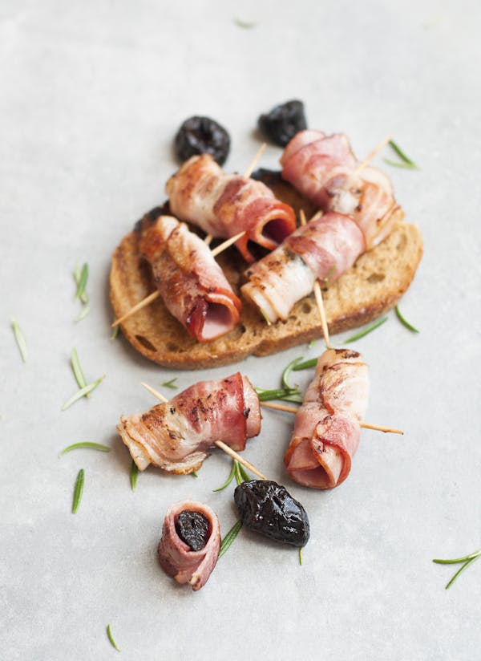
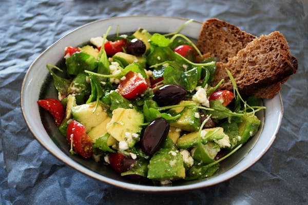
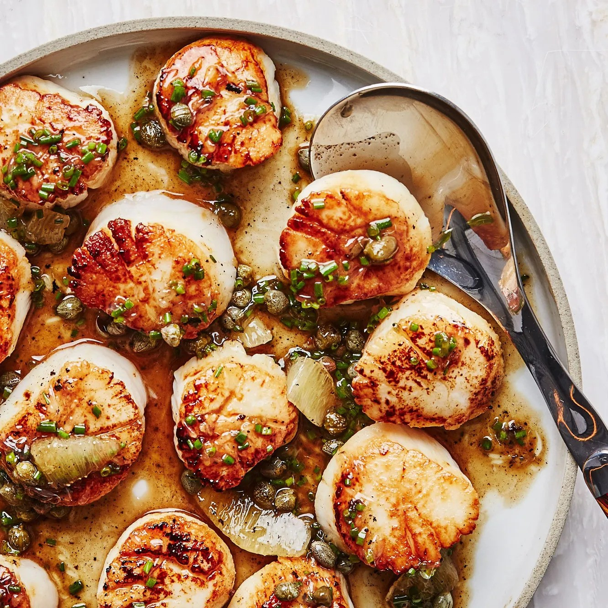
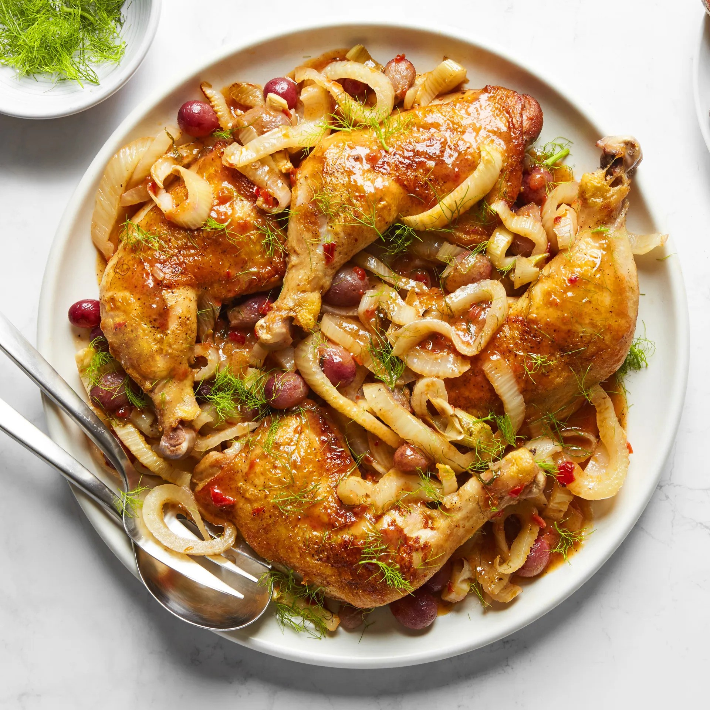

- Appetizer 1: Savory Party Bread It’s impossible to stop nibbling on warm pieces of this cheesy, oniony bread. The sliced loaf fans out for a fun presentation. It’s one of the best savory appetizers I’ve found. —Kay Daly, Raleigh, North Carolina
- Appetizer 2:Teriyaki Pineapple Meatballs These teriyaki pineapple meatballs appetizer changed so many times because of my family’s suggestions that it eventually became a main course. I think the homemade sauce sets these meatballs apart. —Evette Nowicki, Oak Harbor, Washington
- Appetizer 3:Hot Spinach Artichoke Dip One taste of this outrageously delicious hot spinach artichoke dip and your guests will not stop eating it until it’s gone. The savory blend of artichokes, spinach and Parmesan cheese is positively addictive! It tastes even better if you make it the night.
- Main Course 1: Cedar-Plank Salmon A big salmon fillet always feels like a festive main course, especially when it's cooked on a cedar grilling plank, so it picks up a whisper of smoky flavor. Kick off your seafood-themed dinner party with grilled oysters and pair the fish with a simple tomato salad.
- Main Course 2: Seared Scallops With Brown Butter and Lemon Pan Sauce Scallops are always a stunner, but these are dead simple to make: Juice lemons. Spoon out capers. Heat pan. Cook scallops. Make sauce in same pan. Serve.
- Main Course 3: Braised Chicken Legs With Grapes and Fennel There's nothing wrong with defaulting to chicken when you're trying to think of dinner party ideas. The key is to select a truly special chicken recipe, like this easy sweet-and-spicy braise, made with ribbons of fennel and juicy table grapes. You'll want to have a loaf of bread on the side for sopping up the sauce.